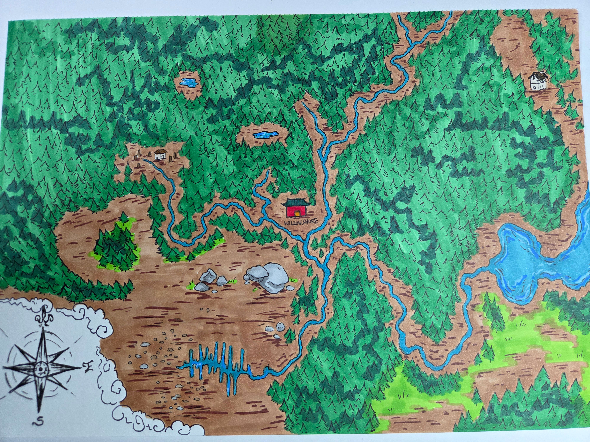
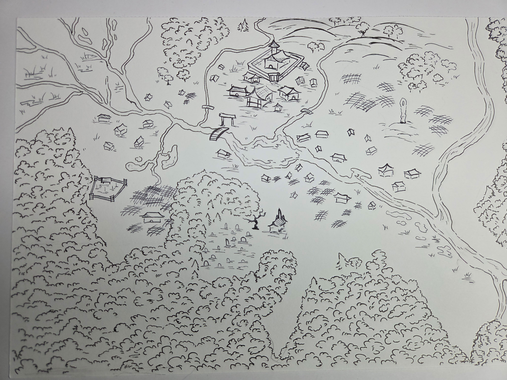

Willowshore¶
A place of faded glory and stubborn heart.
Overview¶
| Type | Village |
| Region | Northern Chu Ye |
| River | Yanzy River |
| Government | Mayor Masru (oni); formerly de facto rule by local family |
Maps¶
Regional Map¶

Willowshore sits at the confluence of rivers, surrounded by dense forest. A lake lies to the east.
Town Map¶

The village features a central manor, torii gate with bridge, scattered buildings, farmland, and a graveyard. Dense forest presses in from the south.
Description¶
Nestled on a slow bend of the rain-swollen Yanzy River, the town of Willowshore is a place of faded glory and stubborn heart. Here at the edge of Chu Ye's wild, mysterious forest, old festivals are honored even as old wounds fester. Strangers' footsteps are watched, and secrets settle thick as mist along the water's edge.
The town sits at a junction of rivers—once a thriving logging and mining hub, now a skeleton of its former self. The closest shore leads north to the sea; the rivers join together into a large lake to the east.
History¶
Willowshore had a heyday long ago, but those days are past. The old industries collapsed, and the population dwindled. For generations, the village was too small and poor to warrant attention from Shogun Tsuneni's regime. In the oni's absence, a local family rose to become de facto rulers.
Now, after generations without an oni mayor, one is finally arriving—claiming to have "always been here." This has stirred unrest and reopened old divisions.
Traditions¶
The Revival of Friendship¶
A traditional rite observed at every change of power—whether a new store manager or a new mayor—where old grudges are publicly put to rest. It serves as an unofficial but very customary Transfer of Power.
The ruling family is refusing to participate in the ceremony for the new oni mayor. This defiance has created tension throughout the village.
Festival of Returning Spirits¶
An ancient festival held on the eve of autumn, meant to protect Willowshore from whatever haunts the dark woods beyond. The whole town gathers as lanterns flicker and drums thrum. Participants are chosen to lead a ceremonial play, walking in the shadows as the founders once did—acting out the fragile bargain that keeps the unknown at bay.
The Rite of Open Reckoning¶
Not a Willowshore tradition but a Chu Ye imperial legal procedure that was invoked here by Magistrate Kurosawa during Session 8. It is an open court hearing: the accused are tried publicly in front of the whole town. Anyone holding public office may invoke the Rite. A judge—typically the highest local authority—hears the evidence, and the judge's ruling is final. The crowd does not vote; they witness.
Both prosecution and defense may call witnesses. The accused may speak in their own defense. The Rite is rarely invoked in modern practice, and carries weight precisely because of its severity.
In the party's case, the mayor served as judge. The verdict was guilty.
The Forest Story¶
The oldest story villagers whisper about the forest shadows involves will-o-wisps that lead people astray into the woods.
Why no one speaks the ending:
The story's ending is never told aloud—not because it's forgotten, but because no one can agree on it, and speaking it starts fights. The disagreement runs deep, touching on old loyalties and resentments.
The truth, known to few: The ending embarrasses the ruling family. The heir to the family fortune was said to have been "lured away by forest spirits." In reality, he simply got drunk and wandered into the woods. His father—a teetotaler—spun the tale about spirits to save face.
This deception created factions. Some people secretly blame each other; some welcomed the oni as a chance to unseat the old rulers. One member of the ruling family (The Smiling One) whispers when they think no one is listening: "I know the real ending."
Local Customs¶
- Averting eyes from oni: When oni enter town, lower classes must avert their gaze—only the ruling class may look upon them
- "I've always been here": The official stance that oni have always been present, despite obvious evidence otherwise
- Spirit death rituals: Local legend holds that death near a spirit requires special disposal of the body, lest it return or be controlled
The Spirit of Willowshore¶
GM retcon (post–Session Fourteen)
Established by Gary's post-session note: Tian Xia has an active spirit realm, and the folk of Chu Ye know it. Spirits are real, present, and interacted with — a fisherman may seek help from the river spirit as a matter of course. The characters have always known this, even where the players didn't.
Willowshore, like the grove and the river, has a spirit of its own. The Grandmother — herself a nature spirit of the Hollow of Seven Cedars, cast into service long ago — left the party a seed that clears the memory-curse from whoever consumes it. Fed to one person, it cures one person (half went to Radiant Willow). But offered to the town spirit of Willowshore — if the party can learn to commune with it and earn its favor — the spirit could consume the seed and cleanse the entire town.
The spirit now has a name: Old Amber (identified Session Fifteen) — the river spirit of Willowshore's waters, an old amber-gold koi, once appeased with rice offerings on full moons and festival nights. It was silent for roughly two years — since before the oni arrived — and most of the old town believed it abandoned them. The truth (Session Sixteen): it had been imprisoned in the Land of Dreams, in a ward of five lanterns guarded by the Mother of a Thousand Wings.
The Curse Lifted (Session Sixteen)¶
The party tore the ward apart from inside the dream, and Old Amber — free — ate the last half of the seed. The effect reached the waking town within moments:
- Every person in Willowshore was cured at once. They remember everything they did and felt under the curse — Yong and Hong remember their feud — but their feelings are their own again. The town understood immediately that its mind had been "enchanted... somehow manipulated"
- The river accelerated, as if the spirit were dragging the curse downstream and dissolving it into nothing. Fishermen shouted as fish leapt into their nets; the water turned brighter; the reeds along the shoreline bloomed. "A painting that has gone from dark to light — like turning a page"
- The town began speaking of it at once: Old Amber has blessed us; the river spirit's favor is won; whatever cursed the town is over. The Silver Mist Inn filled up. Strangers bought the party drinks. Willow called a festival for that evening to celebrate the spirit's return
- The Rite of Open Reckoning's legitimacy collapsed with the curse: the townsfolk who testified against the party now apologize for it, and Mayor Masru surrendered Kurosawa's handwritten verdict script for the first trial
The Second Curse¶
Old Amber's parting words established that the town's trouble is not over. Beneath the memory curse Kurosawa built runs something older and colder — "not part of the first" — that "moves the way grief moves through a family that stops speaking of it. Quiet in the day. Patient. It has learned to keep a door for itself, and to smile from behind it." It likely predates the oni and likely silenced Old Amber two years ago. The party's first suspect is Cheng Yesho, the Smiling One — and the ruling family he belongs to.
Notable Locations¶
| Location | Description |
|---|---|
| The Yeshou Estate | Former manor of the ruling family; now occupied by Magistrate Kurosawa |
| The Torii Gate | Traditional gate at the bridge crossing |
| The Graveyard | Cemetery with family plots, shrines, and cricket cages near the Dark Woods edge |
| The River | Site of strange occurrences; where Ginkgo and Da Baishan witnessed a spirit killing |
| Eternal Blaze Ironworks | Blacksmith shop run by Yong, a young kitsune |
| Silver Mist Lodge | Once-grand inn on the riverside; where the ruling family is temporarily staying |
| Dew Drop Petals | Salon and spa run by Radiant Willow |
| Cloud Paper Lodge | Paper lantern shop; their fireworks were stored in the warehouse |
| Seven Colored Songbird Theater | Open-air theater north of the bridge; site of performances, ceremonies, and the Festival of Returning Spirits transfer of power |
| Liwen's Flower Cart | Tiny florist shop (barely more than a cart) run by Liwen |
| Luda's Shop | Seamstress and informal arcane supplier run by Luda; deals in rare plants, alchemy ingredients, and spell components |
| The Luckless Cod | Local tavern where workers drink after hours |
| The Warehouse | Dock storage for festival fireworks; partially destroyed by fire |
| The Dark Woods | Dense forest to the north; home of the Mourndusk Willow; dangerous at night |
Key Figures¶
Oni Regime¶
- Magistrate Kurosawa — Blue-skinned oni magistrate enforcing martial law
- Mayor Masru — The affable blue-skinned oni mayor, now in residence
- Four red-skinned oni guards in samurai armor
Residents¶
- Mido — Matriarch of the Yeshou family
- The Smiling One — Ruling family member who "knows the real ending"
- Donkey — Ancient elf wizard; village witch
- Yong — Kitsune blacksmith at Eternal Blaze Ironworks
- Hong — Yong's son; hired to set the warehouse fire
- Radiant Willow — Flower leshy beautician at Dew Drop Petals
Visitors¶
- Da Baishan — Orc investigator drawn by suspicion of the oni
- Boone — Dwarf fighter from distant lands
- Ginkgo — Fungus leshy cleric gathering information
- Littlefinger — Halfling rogue with ties to the ruling family
- Cassian Voss — (deceased) Researcher from Absalom who studied "old gods"; now an untethered spirit
Session History¶
Session Zero (2026-01-16)¶
- Village established as the campaign's starting location
- World-building created the Revival of Friendship tradition
- The forest story and its forbidden ending established
- "The Smiling One" created as a mystery NPC
- The torii gate, bridge, and river featured in character bonds
Session One (2026-01-30)¶
- Magistrate Kurosawa introduced as the advance guard for the mayor
- The ruling family displaced from their estate to Silver Mist Lodge
- A warehouse fire destroyed many festival preparations; children rescued by the party
- Multiple new locations discovered and visited by the party
Session Two (2026-02-05)¶
- Hong revealed as the arsonist, hired by the Yeshou family
- Mido introduced as the family matriarch; admitted to the sabotage and canceled further plans
- Kurosawa's secret visits to the Mourndusk Willow in the Dark Woods revealed
- Undead rose in the graveyard for the first time in living memory
- The party fought a ghoul, a zombie, and an undead cat at the cemetery
- A spirit connected to Ginkgo and Da Baishan's secret appeared during and after combat
- Yong planning to leave Willowshore; "sees dark skies ahead"
Session Three (2026-02-12)¶
- The party explored the Dark Woods and discovered a dark summoning ritual at the Mourndusk Willow
- The river spirit identified as Cassian Voss, a foreign researcher from Absalom
- Fought blight-infected wildlife at the Mourndusk Willow; Ginkgo created a salve to cleanse the lichen blight
- Mido identified the ritual as a summoning of the "Mother of a Thousand Wings"—an ancient demon of pestilence
- Willowshore revealed to sit at a convergence of ley lines—arcane geomancy paths that mirror the five rivers on the surface
- Mido disclosed secret entrances into the Yeshou estate (now occupied by the magistrate)
- Yong delivered runed weapons to the party; confirmed plans to leave for a coastal town after the festival
- Hong reported no further sabotage plots among the town's children
- The Festival of Returning Spirits is set for the next evening
Session Four (2026-02-26)¶
- The Festival of Returning Spirits took place: procession, tea transfer ceremony at the Seven Colored Songbird Theater, ceremonial dance, and feast
- Mayor Masru arrived with four red-skinned oni guards—surprisingly unimposing, affable, and food-obsessed
- Mido formally transferred power to Masru via the tea ceremony
- A moth swarm destroyed five lanterns at the theater, alarming both Magistrate Kurosawa and Mido
- Meilin the gravekeeper stunned the town with her transformation during the dance
- A dwarven skeleton (Kaizo clan) was discovered in an old dry well
- Liwen the florist revealed Kurosawa ordered five dozen white lilies (funeral flowers)
- The party infiltrated the Yeshou estate via three routes: firefly through a window, koi pond tunnel, and shed tunnel
- A fox construct alarm triggered in the magistrate's bedroom; Kurosawa rushed back to the estate
- The Yeshou estate's koi pond passage is guarded by a mutated koi fish
Session Five (2026-03-12)¶
- The party escaped the estate: Donkey as a firefly, Da Baishan through the front door with a bluff, Littlefinger through the shadows after stealing a military medal
- Martial law declared by Mayor Masru and Magistrate Kurosawa—all citizens confined to homes, gatherings criminal, travel forbidden; decrees nailed across both sides of town
- Oni guards actively patrolled both banks, escorting citizens home and confronting those outside
- Donkey used Conceal Spell to cast Sleep on an oni guard enforcing the lockdown
- The party was escorted back to Silver Mist Inn under guard
- Mido revealed the existence of Gosembiki (五芒星, the Five Pointed Star)—haunted ruins 10–20 miles east of Willowshore, connected to the ley line convergence
- Luda, a local seamstress and arcane supplier, reported suspicious ingredient purchases by Kurosawa
- The town is now under active lockdown; the magistrate plans to investigate the estate break-in
Session Six (2026-03-19)¶
- A shared dream spread through the town—multiple residents including the party, Mayor Masru, and Radiant Willow experienced vivid visions of the land crying out in pain, rivers running black, and ley lines warping under pressure
- Kurosawa ransacked the party's rooms at Silver Mist Inn as part of his investigation
- Mayor Masru hired the party as "Masru's Faithful Five" with daily stipends and investigative licenses, overriding Kurosawa's authority
- The Yeshou family was sentenced to exile in five days by Kurosawa
- Meilin now appears to serve as a personal attendant to the mayor at the estate
- Captain Akoto identified as one of the oni guard captains patrolling the town
- The party tested their credentials, questioned Akoto, visited the Yeshous, Radiant Willow, and the cemetery before leaving town east toward the Gosembiki ruins
- One of Mido's guards was found transformed into an infected werewolf 8+ miles east of town and killed by the party
Session Eight (2026-04-22)¶
- A chasm tore through town from the east, splitting farmland and buildings along a line parallel to the river—an aftershock of the party pulling Kurosawa's device from the Gosembiki ruins
- Demons began climbing out of the chasm—three emerged on the first night; one was killed by the party, one by Kurosawa in a single nodachi swing, and one dove back into the rift
- At least one commoner was killed in the street; livestock and river-fish were killed by the chasm's heat
- Kurosawa invoked the Rite of Open Reckoning—an ancient Chu Ye legal procedure—against the party; Mayor Masru served as judge
- Verdict: guilty of unlawful interference, reckless endangerment, and spiritual disruption. The party was disarmed and marched to a warehouse.
- Radiant Willow was the only townsperson to raise her hand when Boone asked the crowd who had shared the dream
- The Seven Colored Songbird Theater and the square around it served as the trial site
Session Nine (2026-05-07)¶
- The party fled west along the riverside out of town immediately at session start; Kurosawa and two oni gave chase across the grasslands beyond the town edge
- Kurosawa demonstrated open geomantic combat in the chase: an earthen-grasp that pinned Boone, a 5 ft × 10 ft earthen wall raised across the party's escape line. Kurosawa critically struck Boone twice, dropping him to 0 HP, and sliced Littlefinger near to death
- Radiant Willow ran out of town toward the fight unarmed and pleading. Kurosawa hesitated, lowered his nodachi, and dropped the wall. The party surrendered out of respect for her
- Marched back into town and held in a fishy warehouse near the river (~40 ft × 50 ft, no windows, double doors barred) under one oni guard at a time, four oni in shifts
- The Yeshou family extracted the party at night through a floor-hatch into a smuggling tunnel under the warehouse — part of a much older network beneath Willowshore that the party had no idea existed
- The hidden papers (including a damning planning note in Kurosawa's hand) were retrieved from the wall crevice north of town by Littlefinger, still where he hid them
- Townspeople — Yong among them, who "shook his head, disappointed" — stood at street-edges and watched the party marched in, and stayed silent
- After the escape the party crossed the river south of town and left Willowshore, headed for the Order of the Palatine Eye. The Yeshous remain inside, watching from hideouts
Session Eleven (2026-06-04)¶
- The town did not appear directly, but the party learned the shape of the threat against it. The pool at the Hollow of Seven Cedars showed Kurosawa's Root rite already corrupting Willowshore's memory — neighbors forgetting kindnesses, Liwen not recognizing the party, Radiant Willow forgetting why she trusted them, Yong re-remembering the party as the cause of his son's danger. The corruption flows from the cedars into the town
- The party's fight to save Willowshore is now explicitly a fight for the town's memory of itself, not just its safety — and the only known cure (killing the grove) carries its own heavy cost
Session Twelve (2026-07-16)¶
- The Grandmother confirmed the corruption is real and already done: the town's good memories of the party are eaten and cannot be restored — "what went downhill must remain downhill." Reversing the rite will only stop further damage
- The party returned and surveilled the town from the northwest tree line: life looked outwardly normal (the eastern chasm scar still visible), but the oni garrison has doubled to ~8 red-skinned guards, Kurosawa was nowhere to be seen, and a new blue-skinned oni administrator now issues orders from the Yeshou estate — obeyed even by Captain Akoto
- Under cover of night, the party executed a clean heist of the estate — Donkey as a dragonfly through Kurosawa's office window, Littlefinger picking the lacquered chest's lock — stealing the Root Correction ritual, five copper nails, and Kurosawa's lockbox note. The fox construct arrived moments too late; no alarm was raised
- The party withdrew west into the forest the same night; as far as they know, the town is unaware they were ever there
Session Fourteen (2026-08-20)¶
- The curse's spread is over — the party completed the reversal at the Hollow of Seven Cedars, freeing the Grandmother and permanently stopping the corruption flowing down the ley line into town. The damage already done remains
- The party walked back in and saw what the curse has made of the town (Donkey, Society 21): outwardly normal, inwardly cold — no banter, no clusters of conversation, people transactional and standoffish, "siloish." The community that made Willowshore itself is missing
- Hong and Yong are in open feud — a shouting, public rift; Hong left the forge with a packed bag, heading south, his father calling good riddance behind him. Nobody in town intervened
- The curse's pattern confirmed (GM): those most affected are the people who interacted most with the party or Kurosawa — Hong and Yong worst of all; Radiant Willow heavily tainted but bent toward self-doubt by her optimism
- The first cure: Willow ate half the Grandmother's seed at Dew Drop Petals and was restored completely — the party's one public ally is back, "You've saved our town. Or at least me"
- Kurosawa returned from Cloudbreaker Cairn, audibly displeased — and walked alone into Dew Drop Petals to demand the party "quietly, civilly surrender" for violating their exile. The party is leaning toward answering with their own Rite of Open Reckoning
- Post-session GM retcon: the town has a spirit of its own that could consume the seed and cleanse everyone — see The Spirit of Willowshore above
Session Fifteen (2026-09-03)¶
- A new power arrived: Magistrate Atsura of the Mirror Tribunal — the Council of the Magi's internal affairs — is in town (two days as of this session) to investigate Kurosawa, operating from the Yeshou estate
- The party surrendered civilly and was held in a purpose-built cage in the estate courtyard — then freed the same day by Atsura's ruling: their sentence confines them to Willowshore's borders, not to a cell. They walk the town openly, watched but lawful
- The town's post-curse temperament held: leery, transactional, paranoid — people sitting alone, short sentences, occasional flare-ups of argument. Not hostile, just hollow. Radiant Willow remains the one bright spot, skipping across the street to greet the freed party
- The town spirit was named: Old Amber, the golden-koi river spirit, silent ~two years — since before the oni. Mido (back in her suite at the Silver Mist Inn, its concierge desk now unmanned) supplied the lore; the route to the spirit runs through the Land of Dreams
- Luda's flower shop supplied nightshade and poppy for the deep-sleep brew (9 gp, minus the 6 Littlefinger stole back); the brew was crafted and drunk in the back rooms of Dew Drop Petals, with Donkey and Littlefinger crossing into the dream of Willowshore — a warped, mirrored painting of the town — where the Mother of a Thousand Wings waits tethered to five lanterns
Session Sixteen (2026-09-17)¶
- The memory curse is lifted from the entire town. Old Amber, freed from its dream-prison by the party, consumed the Grandmother's seed — see The Curse Lifted above. The river quickened, fish leapt into nets, the reeds bloomed, and Yong and Hong embraced in the square
- The town turned. Townsfolk thanked the party in the street; Yong apologized for his silence at the trial; a dock worker at the Silver Mist Inn — full and loud for the first time in memory — poured them half his cider and called the day "a turning point for Willowshore"
- Public confrontation in the square: Willow credited the "so-called fugitives" with saving the town; Kurosawa called the party "an evil, dark part of Willowshore" and demanded their re-arrest; Atsura refused — "they are abiding by the ruling." Kurosawa retreated to the estate fuming
- Masru apologized and handed over Kurosawa's handwritten script for the first Reckoning's verdict; Atsura declared her investigation "nearly complete" and offered the party a choice between her verdict and their own Second Reckoning
- A festival was called for sundown to celebrate Old Amber's return and the sudden bounty of fish; the town spent the afternoon hanging decorations and preparing food
- Meilin remains confined to the Yeshou estate with Masru — bruised, frightened, and denying it — while the mayor lobbies to take her back to Kirahata
- The second curse entered the record via Old Amber's warning; the party took the question straight to the Yeshou suite at the Silver Mist Inn, where Cheng said "Treats" and Mido looked nervous